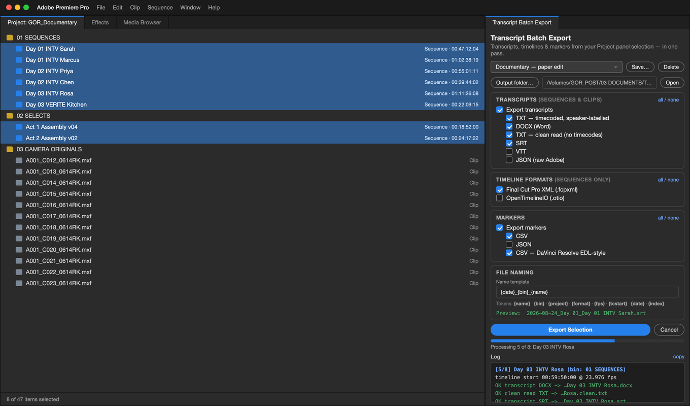

A PREMIERE PRO PLUGIN BY PRANAY NICHANI
Transcript Batch Export
Every transcript out of Premiere Pro, in the format you actually need — timecoded, speaker-labelled Word documents, subtitles, spreadsheets, markers and chapters. Batch is how it scales: select your sequences, tick what you want, run once.

What it does
- Transcripts with real timecode — Timeline/Source TC (HH:MM:SS:FF), zero-based real time (HH:MM:SS), or both. Clips are stamped with the camera's source timecode.
- A Word document you can hand to a producer — timecode column, speaker column, running header, page numbers, real heading styles.
- One document for the whole batch — eight interview days become a single paper-edit document, one sequence per page.
- Speaker tools — rename, exclude, one file per speaker, per-project speaker memory.
- Every format post asks for — TXT, DOCX, clean read, Markdown, CSV, XLSX, SRT, VTT, JSON, stats.
- Timelines and markers too — FCPXML, OTIO, marker CSV/JSON, a DaVinci Resolve-ready marker CSV, and a paste-ready YouTube chapter list.
Get it
Transcript Batch Export is coming to the Adobe Creative Cloud Marketplace — monthly subscription with a 30-day free trial, installed and updated through the Creative Cloud desktop app. Requires Premiere Pro 25.6 or later on macOS or Windows.
No account, no telemetry, no internet connection: the plugin runs entirely on your machine and your media never leaves it.
Documentation
Support
Email pranaynichani@gmail.com — answered by the person who wrote the code. Include your Premiere version, OS, and a copy of the panel log (the copy link above the log).